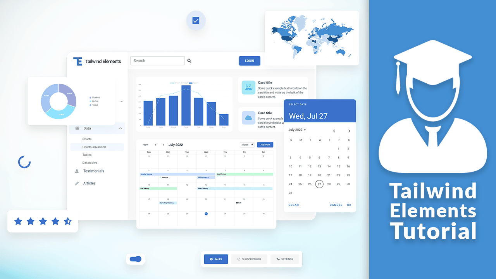

Welcome to the TW Elements course! This beginner-friendly, example-based course will guide you through the essential knowledge of our ecosystem.
Here you will learn not only how to effectively use TW Elements, but also Tailwind CSS itself, Material Minimal design system, UI & UX design and MDB GO.
What will you learn
If you are not familiar with the above terms - don't worry. I will explain everything to you in the next lesson.
Each section of this course is an independent part (albeit based on the knowledge from the previous parts).
So if you feel that a particular topic from the given part is already familiar to you, feel free to skip it and move on to the next part (for example, if you feel that you already know Tailwind CSS well and you are only interested in learning TW Elements - do not hesitate to skip the part and move on to the next lessons).
Remember, however, that all the topics covered in this course form a coherent whole. To fully use the potential of our ecosystem, you should be well versed in all these topics.
About the author
At the end of this short introduction, a word about me.
My name is Michal, I am a co-founder of TW Elements and I will have the pleasure to introduce you to the world of our ecosystem 🙂 I hope you will find it not only extremely useful, but also super interesting and enjoyable.
If you want, we can stay in touch on twitter. I publish there useful stuff related to web development and UI / UX design.
The first few lessons of my UI/UX design course are now published and available for free
— Michal Szymanski (@ascensus_mdb) April 25, 2023
Check it out at https://t.co/AsgQ86RaMv
For each example in the course, I'm going to create fully functional snippets for Bootstrap, Tailwind, and Figma
Let’s get started!